Dessine-moi un graphique (en CSS)
Suite de « La donnée graphique avec HTML et CSS » donnée
à Paris Web 2018 (Viméo).
- Slides en ligne
- ffoodd.fr/devfest.2023
- Documentation complète
- ffoodd.github.io/chaarts
Le principe de moindre pouvoir
C’est un des axiomes du web, proposés par Tim Berners-Lee en 1998 — à côté de kiss, du design modulaire, de la tolérance ou de la décentralisation.
Le mantra de l’amélioration progressive, en somme…
Définition
Un graphique de données est :
- un ensemble de clés,
- associées à une ou plusieurs valeurs,
- disposées sur une échelle,
- mises en forme afin d’en faciliter la compréhension.
Vous pourrez en apprendre plus sur la représentation graphique de données sur Wikipédia.
Piqûre de rappel
Le plus important, c’est le contenu — et par extension, sa sémantique.
Pour décrire un ensemble de clés et valeurs en html, il n’existe pas moult choix — en fait, deux :
- les listes de définitions :
<dl>,<dt>et<dd>; - les tableaux de données, solution plébiscitée.
Et oui, ça sert à ça en vrai.
- 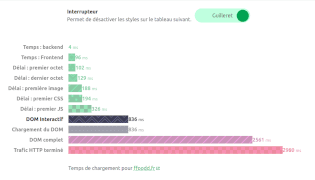
- 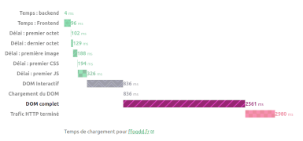
- 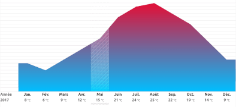
- 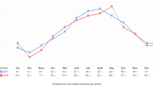
- 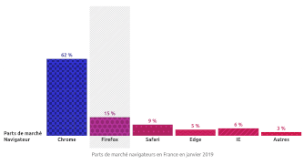
- 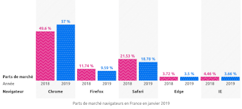
- 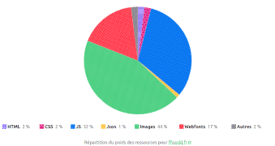
- 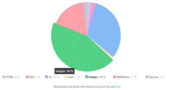
- 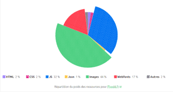
- 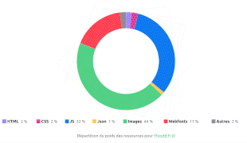
- 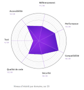
- 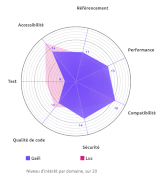
Avec en vrac des idées de Trys Mudford, Heydon Pickering, Greg Whitworth, Miriam Suzanne, Andy Bell, Sebastian Shaw, Hidde De vries, Ire Aderinokun, Roman Komarov, Sara Soueidan, Michelle Barker, Cassie Evans, Carter Li, Ana Tudor, Lea Verou, Stereokai et Patrick Brosset…
En résumé :
- Côté HTML, ce sont des tableaux ;
- Avec une couche de CSS très avancés ;
- Et un JavaScript minimaliste pour permettre à l’utilisateur de débrayer les styles.
C’est donc accessible, performant, autonome et statique. Mais nous sommes en 2023 : on peut améliorer tout ça ! Lançons-nous avec un camembert interactif !
Le tableau nu
<table>
<caption>[…]</caption>
<thead>
<tr>
<th scope="col">[…]</th>
<th scope="col">[…]</th>
</tr>
</thead>
<tbody>
<tr>
<th scope="row">HTML</th>
<td>2 %</td>
</tr>
<tr>[…]</tr>
</tbody>
</table>| Ressource | Proportion |
|---|---|
| HTML | 2 % |
| CSS | 2 % |
| JS | 32 % |
| JSON | 1 % |
| Images | 44 % |
| Fontes | 17 % |
| Autre | 2 % |
Un peu d’habillage
@layer framework, element, chaarts;
@import url("https://bootstrap.min.css") layer(framework);
@layer element {
table {
border-collapse: collapse;
caption-side: top;
font-feature-settings: "tnum";
inline-size: 100%;
margin-block-end: 1.5rem;
vertical-align: top;
}
table > caption:first-child {
font-style: italic;
}
}| Ressource | Proportion |
|---|---|
| HTML | 2 % |
| CSS | 2 % |
| JS | 32 % |
| JSON | 1 % |
| Images | 44 % |
| Fontes | 17 % |
| Autre | 2 % |
Un vrai défilé
Technique créée par Lea verou, adaptée aux tableaux par Chen Hui Jing.
@layer element {
.scrollable-container {
background:
local linear-gradient(to right, #fff 30%, #0000) 0 0 / 2.5rem 100% no-repeat,
local linear-gradient(to right, #0000, #fff 70%) 100% / 2.5rem 100% no-repeat,
scroll radial-gradient(farthest-side at 0% 50%, #0004, #0000) 0 0 / 1rem 100% no-repeat,
#fff
scroll radial-gradient(farthest-side at 100% 50%, #0004, #0000) 100% / 1rem 100% no-repeat;
max-inline-size: 100%;
-webkit-overflow-scrolling: touch;
overflow-x: auto;
overflow-y: hidden;
}
}| Ressource | Proportion |
|---|---|
| HTML | 2 % |
| CSS | 2 % |
| JS | 32 % |
| JSON | 1 % |
| Images | 44 % |
| Fontes | 17 % |
| Autre | 2 % |
Un défilé accessible
Pour qu’un élément défilable soit accessible au clavier, on a besoin d’un petit bout de JavaScript.
const regions = document.querySelectorAll('.scrollable-container');
regions.forEach(region => {
const width = region.offsetWidth;
const child = region.querySelector('table') || region.querySelector('code');
if (child.offsetWidth > width) {
region.setAttribute('tabindex', '0');
}
});Début de chantier
@layer container {
.chaarts {
border-collapse: separate;
border-spacing: 0;
caption-side: bottom;
contain: content;
empty-cells: hide;
overflow: hidden;
}
.chaarts > caption:first-child {
font-style: normal;
}
.chaarts th,
.chaarts td {
border: 0;
padding: 0;
}
}| Ressource | Proportion |
|---|---|
| HTML | 2 % |
| CSS | 2 % |
| JS | 32 % |
| JSON | 1 % |
| Images | 44 % |
| Fontes | 17 % |
| Autre | 2 % |
Devenir légende
@layer chaarts {
@media screen and (min-width: 60rem) {
.chaarts tbody {
display: flex;
}
.chaarts tbody tr {
flex: 1 1 auto;
}
}
.chaarts tbody tr[scope="row"] {
padding-inline-end: .5rem;
}
.chaarts tbody [scope="row"]::before {
background: var(--color, currentcolor);
block-size: 1rem;
content: "";
display: inline-block;
inline-size: 1rem;
transform: translate3d(-.2rem, .1rem, 0);
}
}| Ressource | Proportion |
|---|---|
| HTML | 2 % |
| CSS | 2 % |
| JS | 32 % |
| JSON | 1 % |
| Images | 44 % |
| Fontes | 17 % |
| Autre | 2 % |
Forger la légende
<table class="chaarts pie">
<caption>[…]</caption>
<thead class="sr-only">
<tr>
<th scope="col">[…]</th>
<th scope="col">[…]</th>
</tr>
</thead>
<tbody>
<tr style="--color: purple;">
<th scope="row">HTML</th>
<td>2 %</td>
</tr>
<tr>[…]</tr>
</tbody>
</table>
| Ressource | Proportion |
|---|---|
| HTML | 2 % |
| CSS | 2 % |
| JS | 32 % |
| JSON | 1 % |
| Images | 44 % |
| Fontes | 17 % |
| Autre | 2 % |
Une palette de couleurs automagique
Sara Soueidan
a détaillé la combinaison de hsl() et calc().
.chaarts-container {
--chaarts-purple: #639;
--chaarts-pink: #e11a81;
--chaarts-blue: #0172f0;
--chaarts-yellow: #fdc02f;
--chaarts-green: #39ca74;
--chaarts-red: #ff2d40;
--chaarts-gray: #585462;
}.chaarts-container {
--hue: 270;
--lightness: 50%;
--saturation: 100%;
--chaarts-purple: hsl(var(--hue) calc(var(--saturation) / 2) var(--lightness));
--chaarts-pink: hsl(calc(var(--hue) + 60) var(--saturation) var(--lightness));
--chaarts-blue: hsl(calc(var(--hue) - 60) var(--saturation) var(--lightness));
--chaarts-yellow: hsl(40 var(--saturation) var(--lightness));
--chaarts-green: hsl(calc(var(--hue) - 120) var(--saturation) var(--lightness));
--chaarts-red: hsl(calc(var(--hue) + 90) var(--saturation) var(--lightness));
--chaarts-gray: hsl(0 0% var(--lightness));
}Démonstration live
Mode sombre / clair
Vous avez compris le principe : tous les arguments de hsl()
peuvent être ajustés !
Vous avez remarqué l’absence de virgules ?
C’est la notation séparée par des espaces : rgb(0 0 0 / .5).
.chaarts-container {
color-scheme: light;
--background-lightness: 100%;
--foreground-lightness: 0%;
--background: hsl(0 0% var(--background-lightness));
--foreground: hsl(0 0% var(--foreground-lightness));
background-color: var(--background);
color: var(--foreground);
}
@media (prefers-color-scheme: dark) {
.chaarts-container {
color-scheme: dark;
--background-lightness: 0%;
--foreground-lightness: 100%;
}
}Mode contrastes élevés
Adrian Roselli a partagé une mine d’informations sur les contrastes élevés.
@media (prefers-contrast: more) {
.chaarts-container {
--background: Canvas;
--foreground: CanvasText;
--chaarts-purple: LinkText;
--chaarts-pink: CanvasText;
--chaarts-blue: Highlight;
--chaarts-yellow: ActiveText;
--chaarts-green: InactiveBorder;
--chaarts-red: VisitedText;
--chaarts-gray: ButtonShadow;
}
}Si la couleur n’existait pas…
Basé sur une idée de Trys Mudford
pour limiter les requêtes
et une
recommandation de Chris Coyier (via Charlotte Dann) sur ce qu’il faut encoder — en
résumé, seulement l’octhotorpe (#).
.chaarts-container {
--checkers: url("data:image/svg+xml,<svg xmlns='http://www.w3.org/2000/svg' width='8' height='8' viewBox='0 0 8 8'><g fill='hsl(0 0% 100% / .6)'><path fill-rule='evenodd' d='M0 0h4v4H0V0zm4 4h4v4H4V4z'/></g></svg>");
--hexagons: url("data:image/svg+xml,<svg xmlns='http://www.w3.org/2000/svg' width='14' height='24' viewBox='0 0 28 49'><g fill-rule='evenodd'><g fill='hsl(0 0% 100% / .6)' fill-rule='nonzero'><path d='M13.99 9.25l13 7.5v15l-13 7.5L1 31.75v-15l12.99-7.5zM3 17.9v12.7l10.99 6.34 11-6.35V17.9l-11-6.34L3 17.9zM0 15l12.98-7.5V0h-2v6.35L0 12.69v2.3zm0 18.5L12.98 41v8h-2v-6.85L0 35.81v-2.3zM15 0v7.5L27.99 15H28v-2.31h-.01L17 6.35V0h-2zm0 49v-8l12.99-7.5H28v2.31h-.01L17 42.15V49h-2z'/></g></g></svg>");
--triangles: url("data:image/svg+xml,<svg xmlns='http://www.w3.org/2000/svg' width='8' height='16' viewBox='0 0 36 72'><g fill-rule='evenodd'><g fill='hsl(0 0% 100% / .6)'><path d='M2 6h12L8 18 2 6zm18 36h12l-6 12-6-12z'/></g></g></svg>");
--zig: url("data:image/svg+xml,<svg xmlns='http://www.w3.org/2000/svg' width='20' height='12' viewBox='0 0 20 12'><g fill-rule='evenodd'><g fill='hsl(0 0% 100% / .6)'><path d='M9.8 12L0 2.2V.8l10 10 10-10v1.4L10.2 12h-.4zm-4 0L0 6.2V4.8L7.2 12H5.8zm8.4 0L20 6.2V4.8L12.8 12h1.4zM9.8 0l.2.2.2-.2h-.4zm-4 0L10 4.2 14.2 0h-1.4L10 2.8 7.2 0H5.8z'/></g></g></svg>");
--stripes: url("data:image/svg+xml,<svg width='6' height='6' viewBox='0 0 6 6' xmlns='http://www.w3.org/2000/svg'><g fill='hsl(0 0% 100% / .6)' fill-rule='evenodd'><path d='M5 0h1L0 6V5zM6 5v1H5z'/></g></svg>");
--dots: url("data:image/svg+xml,<svg width='10' height='10' viewBox='0 0 20 20' xmlns='http://www.w3.org/2000/svg'><g fill='hsl(0 0% 100% / .6)' fill-rule='evenodd'><circle cx='3' cy='3' r='3'/><circle cx='13' cy='13' r='3'/></g></svg>");
}
.chaarts tr {
background: var(--color) var(--background);
}
.chaarts tr:nth-of-type(1n + 1) {
--background: var(--checkers);
}
.chaarts tr:nth-of-type(2n + 2) {
--background: var(--hexagons);
}Un peu d’espace
.chaarts {
--radius: 32rem;
margin: 0 auto;
padding-block-start: calc(var(--radius) + 2rem);
position: relative;
}| Ressource | Proportion |
|---|---|
| HTML | 2 % |
| CSS | 2 % |
| JS | 32 % |
| JSON | 1 % |
| Images | 44 % |
| Fontes | 17 % |
| Autre | 2 % |
Coloniser l’espace
.chaarts td::before {
background: var(--color, currentcolor) var(--background);
block-size: var(--radius);
border-radius: 50%;
content: '';
inline-size: var(--radius);
inset-block-start: calc(var(--radius) / 2);
inset-inline-start: 50%;
position: absolute;
transform: translate3d(-50%, -50%, 0);
transform-origin: center;
}| Ressource | Proportion |
|---|---|
| HTML | 2 % |
| CSS | 2 % |
| JS | 32 % |
| JSON | 1 % |
| Images | 44 % |
| Fontes | 17 % |
| Autre | 2 % |
Ça va couper
Découper la tarte
Vous connaissez l’inspecteur de Firefox ?
.chaarts td::before {
clip-path: polygon(
50% 50%,
50% 0%,
100% 0%,
93.8153% 25.9123%
);
}| Ressource | Proportion |
|---|---|
| HTML | 2 % |
| CSS | 2 % |
| JS | 32 % |
| JSON | 1 % |
| Images | 44 % |
| Fontes | 17 % |
| Autre | 2 % |
Cherchez l’angle
Pour trouver le point sur le cercle :
- on identifie le triangle rectangle formé par le rayon du cercle, son centre, et notre point cible ;
- on connait son hypoténuse — le rayon ;
- mais également l’angle opposé — qu’on convertit en radians en le multipliant par
0.01745329251, donc… - on peut appliquer la loi des sinus pour trouver la longueur des deux autres côtés ! 😇
| Ressource | Proportion |
|---|---|
| HTML | 2 % |
| CSS | 2 % |
| JS | 32 % |
| JSON | 1 % |
| Images | 44 % |
| Fontes | 17 % |
| Autre | 2 % |
Les fonctions mathématiques
En 2018 🥵
--sin-α-1: var(--α);
--sin-α-2: calc((var(--α) * var(--α) * var(--α)) / 6);
--sin-α-3: calc((var(--α) * var(--α) * var(--α) * var(--α) * var(--α)) / 120);
--sin-α-4: calc((var(--α) * var(--α) * var(--α) * var(--α) * var(--α) * var(--α) * var(--α)) / 5040);
--sin-α-5: calc((var(--α) * var(--α) * var(--α) * var(--α) * var(--α) * var(--α) * var(--α) * var(--α) * var(--α)) / 362880);
/* Finalement ! */
--sin-α: calc(var(--sin-α-1) - var(--sin-α-2) + var(--sin-α-3) - var(--sin-α-4) + var(--sin-α-5));
En 2023 🤯
--sin-α: sin(var(--a));
Placer le point
Pour vérifier vos résultats, window.getComputedStyle(temp0, ':before').clipPath dans la console !
.chaarts td::before {
--part: calc(var(--value) * 3.6);
--β: calc(var(--part) * var(--to-radians));
--α: calc((90 - var(--part)) * var(--to-radians));
--pos-B: calc(sin(var(--β)) * 50%);
--pos-A: calc(sin(var(--α)) * 50%);
clip-path: polygon(
50% 50%,
50% 0%,
100% 0%,
calc(50% + var(--pos-B)) calc(50% - var(--pos-A))
);
}| Ressource | Proportion |
|---|---|
| HTML | 2 % |
| CSS | 2 % |
| JS | 32 % |
| JSON | 1 % |
| Images | 44 % |
| Fontes | 17 % |
| Autre | 2 % |
Placer les points
Les décalages par rapport au centre sont différents selon la tranche de valeur.
-

Valeur entre 25 et 50%. -
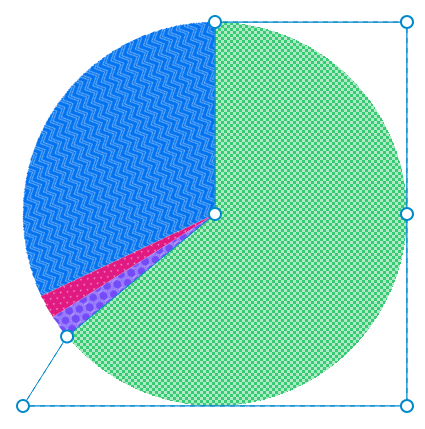 Valeur entre 50 et 75%. -
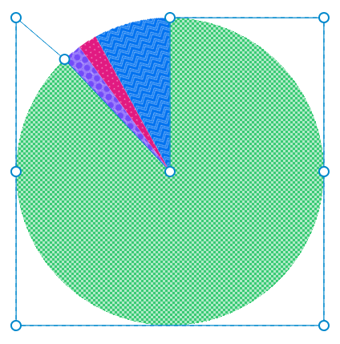 Valeur entre 75 et 100%.
Nous avons quatre cadrants différents à gérer — mais un seul polygone…
Certains points doivent donc basculer d’une position à une autre selon la valeur.
Il nous faudra dix points, au total.
Un booléen en CSS
Des drapeaux
Basé sur une idée de Roma Komarov.
.chaarts td {
--lt-25: clamp(0, 25 - var(--value), 1);
--gt-25: calc(1 - var(--lt-25));
}Des conditions
.chaarts td::before {
clip-path: polygon(…
calc(var(--gt-25, 0) * 100%)
…);
}Des comparaisons
.chaarts td::before {
clip-path: polygon(…
max(50%, var(--gt-25, 0) * 100%)
max(50%, var(--gt-25, 0) * 100%)
…);
}| Ressource | Proportion |
|---|---|
| HTML | 2 % |
| CSS | 2 % |
| JS | 32 % |
| JSON | 1 % |
| Images | 44 % |
| Fontes | 17 % |
| Autre | 2 % |
Distribution des parts
Côté HTML
<td style="--value: 17; --start: 81;">Côté CSS
.chaarts td {
--position: calc(var(--start, 0) * .01turn);
}
.chaarts td::before {
transform:
translate3d(-50%, -50%, 0)
rotate(var(--position)
);
}| Ressource | Proportion |
|---|---|
| HTML | 2 % |
| CSS | 2 % |
| JS | 32 % |
| JSON | 1 % |
| Images | 44 % |
| Fontes | 17 % |
| Autre | 2 % |
Au survol
.chaarts {
--enter: cubic-bezier(0, .5, .5, 1);
--exit: cubic-bezier(.5, 0, 1, .5);
--move: cubic-bezier(.5, 0, .5, 1);
}
.chaarts td::before {
--zoom: .75;
transform:
translate3d(-50%, -50%, 0)
rotate(var(--position))
scale(var(--zoom));
transition: transform .2s var(--move);
}
.chaarts tr:hover td::before {
--zoom: .8;
}
.chaarts tbody:hover tr {
opacity: .5;
}
.chaarts tbody:hover tr:hover {
opacity: 1;
}| Ressource | Proportion |
|---|---|
| HTML | 2 % |
| CSS | 2 % |
| JS | 32 % |
| JSON | 1 % |
| Images | 44 % |
| Fontes | 17 % |
| Autre | 2 % |
Encore plus d’altitude
Tiré d’une réponse d’Ana Tudor sur la distribution autour d’un cercle.
.chaarts td::after {
--axis: calc(
var(--position) - .25turn
+ var(--value) * .005turn
);
--away: calc(var(--radius) / 2 - 1rem);
background-color: var(--foreground-lighter);
color: var(--background-lighter);
content: "";
opacity: 0;
padding: .5rem;
pointer-events: none;
transform:
translate3d(-50%, -50%, 0)
rotate(var(--axis))
translate(var(--away))
rotate(calc(var(--axis) * -1))
perspective(1000px)
rotate3d(1, 0, 0, 45deg);
transform-origin: 50% calc(100% + 10px);
transition: opacity .2s var(--enter),
transform .2s var(--enter);
z-index: 3;
}| Ressource | Proportion |
|---|---|
| HTML | 2 % |
| CSS | 2 % |
| JS | 32 % |
| JSON | 1 % |
| Images | 44 % |
| Fontes | 17 % |
| Autre | 2 % |
Conversion de types
Basé sur une idée de Cassie Evans pour convertir un entier en chaîne.
@property --integer {
inherits: false;
initial-value: 0;
syntax: "<integer>";
}
.chaarts td::after {
--integer: calc(var(--value));
content: var(--term) "\A0: " counter(value) "\A0%";
counter-reset: value var(--integer);
}| Ressource | Proportion |
|---|---|
| HTML | 2 % |
| CSS | 2 % |
| JS | 32 % |
| JSON | 1 % |
| Images | 44 % |
| Fontes | 17 % |
| Autre | 2 % |
Pourquoi pas conic-gradient()
Ça nous épargnerait la trigonométrie, les conditions et comparaisons. Oui, mais…
.chaarts td::before {
mask-image: conic-gradient(#ffff var(--value), #0000 0);
}| Ressource | Proportion |
|---|---|
| HTML | 2 % |
| CSS | 2 % |
| JS | 32 % |
| JSON | 1 % |
| Images | 44 % |
| Fontes | 17 % |
| Autre | 2 % |
Le RTL grâce aux propriétés logiques

Image tirée de l’article Logical properties sur web.dev
| Ressource | Proportion |
|---|---|
| HTML | 2 % |
| CSS | 2 % |
| JS | 32 % |
| JSON | 1 % |
| Images | 44 % |
| Fontes | 17 % |
| Autre | 2 % |
Quelques ajustements
Ahmad Shadeed détaille les subtilités du RTL sur un site dédié.
[dir="rtl"] .chaarts {
--is-rtl: -1;
}
[dir="rtl"] .chaarts [scope="row"]::before {
translate: calc(-.2rem * var(--is-rtl, 1)) .1rem 0;
}
[dir="rtl"] .chaarts td::before {
transform:
translate3d(calc(-50% * var(--is-rtl, 1)), -50%, 0)
rotate(var(--position))
scale(var(--zoom));
}| Ressource | Proportion |
|---|---|
| HTML | 2 % |
| CSS | 2 % |
| JS | 32 % |
| JSON | 1 % |
| Images | 44 % |
| Fontes | 17 % |
| Autre | 2 % |
Devenir donut
.chaarts {
--offset: 8rem;
--mask: radial-gradient(
circle at 50% calc(50% - 2rem),
#0000 0 var(--offset),
#ffff calc(var(--offset) + 1px) 100%
);
mask-image: var(--mask);
}
.chaarts td::after {
--away: calc(var(--radius) / 2 - 2.5rem);
}| Ressource | Proportion |
|---|---|
| HTML | 2 % |
| CSS | 2 % |
| JS | 32 % |
| JSON | 1 % |
| Images | 44 % |
| Fontes | 17 % |
| Autre | 2 % |
Devenir polaire
.chaarts td::before,
.chaarts tr:hover td::before {
--zoom: 50;
transform:
translate3d(calc(-50% * var(--is-rtl, 1)), -50%, 0)
rotate(var(--position))
scale(calc((var(--zoom) + (var(--value) / (100 / var(--zoom)))) / 100));
}| Ressource | Proportion |
|---|---|
| HTML | 2 % |
| CSS | 2 % |
| JS | 32 % |
| JSON | 1 % |
| Images | 44 % |
| Fontes | 17 % |
| Autre | 2 % |
Interrupteur de styles
Adrian Roselli a découvert que
tripatouiller le display des tableaux abîme sa sémantique exposée
— c’est pourquoi j’implémente le composant inclusif du toggle button
conçu par Heydon Pickering pour désactiver les styles à volonté.
const switches = document.querySelectorAll('[role="switch"]');
switches.forEach(el => {
el.addEventListener('click', () => {
const checked = el.getAttribute('aria-checked') === 'true' || false;
el.setAttribute('aria-checked', !checked);
if (el.classList.contains('disable-css')) {
const chart = el.parentNode.nextElementSibling;
chart.classList.toggle('chaarts');
}
});
});
Interrupteur
Désactiver les styles sur le tableau ci-après.
| Ressource | Proportion |
|---|---|
| HTML | 2 % |
| CSS | 2 % |
| JS | 32 % |
| JSON | 1 % |
| Images | 44 % |
| Fontes | 17 % |
| Autre | 2 % |
Vers l’infini et l’au-delà
Il y a d’autres types de graphiques sur chaarts, basés sur d’autres astuces et avec d’autres opportunités d’améliorations !
- Les animations avancées grâce à
@property. - La simplification du code avec
:has(). - Le responsive avec les container queries.
attr()etcounter()avec un typage faible et la possibilité de s’en servir ailleurs que dans la propriétécontent.- Les couleurs relatives :
color: hsl(from var(--color) calc(h + 180deg) s l);. - Les fonctions de voisinnage :
sibling-index()etsibling-count(). - Les courbes de bézier pour les tracés avec la fonction
d(). - Les animations liées au défilement avec
animation-timeline: scroll(). - Le défilement aimanté avec
scroll-snap. - Les tracés d’animation avec
offset-path.
Rappelez-vous : ce n’est que du CSS !
Merci
Et à bientôt
Crédits
- T-shirt : Not you sur Teemill — par Heydon Pickering ;
- Pictogrammes : Rounded UI — par Marek Polakovic ;
- Emojis : Twemoji — par Twitter ;
- Typographie de titraille : Bello Pro — créée par Underware ;
- Typographie de labeur : Museo Slab — créée par Exljbris ;
- Moteur de présentation inspiré de "CSS scroll-snap slide deck that supports live coding" de Stephanie Eckles sur Smashing Magazine.